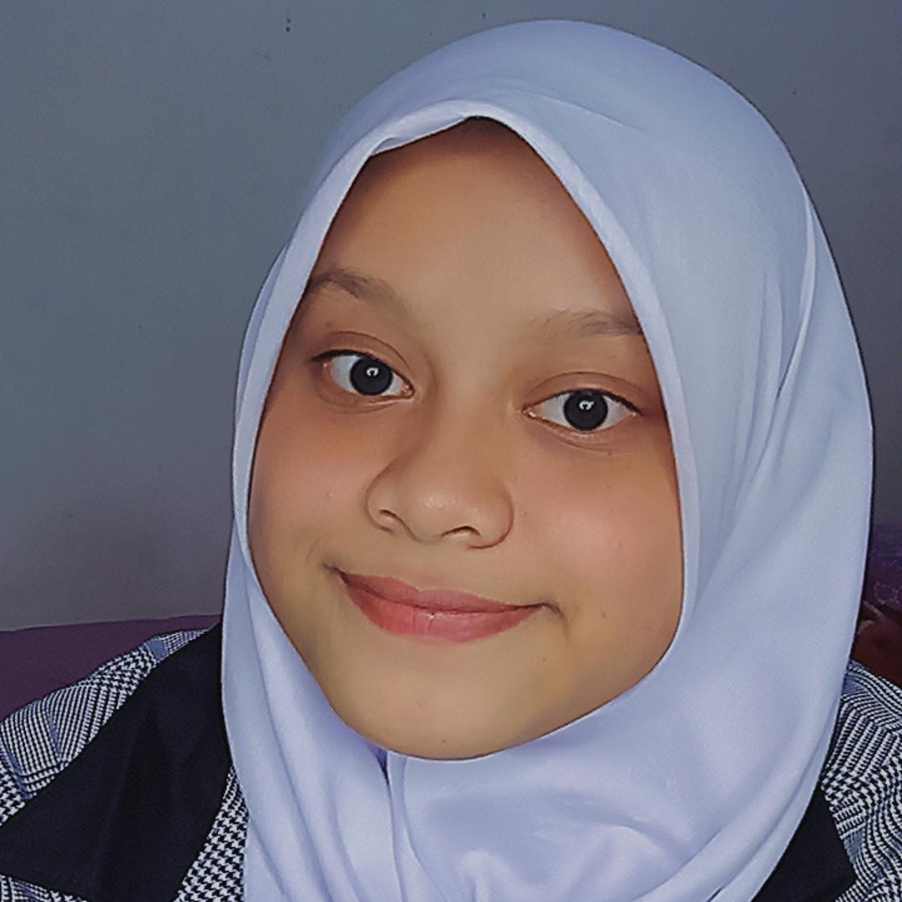

MY WEBSITE
Alifya Adinda Zikra
Assalamu'alaikum,Haii!!

HALO!!!!
Perkenalkan nama saya Alifya adinda zikra. Saat ini saya sedang menjadi siswa kelas 10 di SMK
Wikrama Bogor Pengembangan Perangkat Lunak dan Gim(PPLG). Saat ini saya menggali skill saya dalam membuat web.Mengembangkan diri dalam pembuatan sebuah web yang di dalam nya merupakan . Mengembangkan dan menambah skill saya dalam menguasai pemerograman.Saya juga sedang mengembangkan keahlian diri saya dalam bidang Font End Development. Saya harap akan terus berkembang dalam bidang ini, dan menguasai berbagai keahlian.